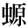

毒と迷信
小酒井不木
一 原始人類と毒
ダーウインの進化論を、明快なる筆により、通俗的に説明せしことを以（もつ）て名高い英国の医学者ハツクスレーが、「医術は凡（すべ）ての科学の乳母だ」といつたのは蓋（けだ）し至言といはねばなるまい。何となれば、吾人の祖先即ち原始人類が、この世を征服するために最も必要なりしことは主として野獣との争闘であり、従つて野獣を殺すための毒矢の必要、又負傷したときの創（きず）の手当の必要等からして、医術は人類の創成と共に発達しなければならなかつたからである。而（しか）して現今の医学の主要なる部分を占（し）むる薬物療法なるものは、実に原始人類から伝へられて来た種々の毒に関する口碑（こうひ）が基（もと）となつて発達して来たものであつて、この意味に於て、毒は凡ての科学の開祖と見做（みな）しても差支（さしつかへ）ないのである。本来、「薬」なる語は毒を消す意味を持ち、毒と相対峙して用ひられたものであるが、毒も少量に用ふるときは薬となり、加之（のみならず）最も有効な薬は、之（これ）を多量に用ふれば最も恐ろしい毒であることは周知のことである。
毒と人生！ある意味に於てこれ程関係の深いものは無いといつても過言ではなからう。何となれば酒、煙草、茶、とかう列（なら）べて見るだけで、敏感な読者は、毒なくしては人生は極めて殺風景であることを感ぜらるゝであらう。酒はアルコホルを、煙草はニコチンを、茶はコフエインを、何（いづ）れも毒を其（そ）の主成分として居るではないか。よしや禁酒宣伝があり、禁煙運動があつても、いまだ禁茶（きんさ）運動のあることを耳にしない。たとひこれ等のものが直接生命の保持に必要なものでないとはいへ、毒と人間とは極めて親しい関係のあることがわかり、況（いは）んや一旦病魔に冒さるれば、多くは毒の力でなくては恢復が出来ないに於ておやである。
人類の祖先は如何（いか）にして毒の存在を知り、その使用法を知つたか。支那では人神牛首（じんしんぎうしゆ）の神農氏（しんのうし）が赭鞭（かはむち）を以て草木を鞭（むちう）ち、初めて百草を嘗（な）めて、医薬を知つたといひ、希臘（ギリシヤ）ではアポローの子、エスキユレピアスが、草木土石の性質を会得して医道の祖となつたといはれて居るが何（いづ）れも神話中の人物で、もとより信ずべき筋のものではなく、長い間の経験と幾多の犠牲とを払ひ、其の間に或は他動物の本能的になす所を見たり、或は偶然の機会に依つたりして、毒に関する知識は発達して来たものらしい。
原始人類の知識状態又は生活状態を知るに最も有力なる手がかりは、現今世界に散在する未開地に住する蛮族（ばんぞく）に就（つい）ての研究である。其（そ）れ等（ら）の研究に依（よ）るに、彼等は何れも矢毒（即ち野獣を射て之（これ）を毒殺すべく鏃（やじり）に塗る毒）クラーレ、ヴェラトリンの如（ごと）き猛毒の使用を知り、併（あは）せて阿片（あへん）、規那（きな）、大麻（おほあさ）ヤラツパ、など諸多（いくた）の薬剤の使用を知つて居る。中にも矢毒は原始人類にとりて必要欠（か）くべからざるものであり、又人間を毒殺するてふことの濫觴（らんしやう）とも見られぬでもない。ホーマーの詩「オヂツセー」の中には、ユリツシーズがアイラスに矢毒を要求することが書かれてあり、希臘神話の中にもパリスが毒箭（どくや）を放つてアキリーズを射殺すことが述べてある。ボルネオに現住するヂヤークと称する土人は長さ七尺、直径五分ばかりの吹管（すゐくわん）を用ひて毒矢を吹き放ち、アデンの附近に産するある毒物は其の附近に住む、ソマリーと称する蛮族により矢毒として今も使用せられて居る。
毒の使用を知ると同時に、毒の恐ろしさを知つたのは自然の理であつて、従つて単純なる原始人類の頭は毒に関する幾多の迷信を生じ、それ等の迷信は時として現今の文明人の間にまで残され拡がつて居る。而（しか）して毒に関する迷信は凡そ二種類に大別することが出来、その一は即ち毒物そのものに纏（まと）ふ迷信であつて、其の二は即ち毒物ならぬ色々の物質を毒と思つて取り扱ふ迷信である。原始人類に共存せる偶像崇拝の風習により、ある種族が定めた偶像例へば一定の動物とか植物とかは、其種族は之を食（くら）ふことを禁止し、若（も）し之を食したならば其の物は毒となりて、之を食したものに疾病を醸（かも）すなどの迷信も、これに加へることが出来よう。コンゴに住むイーキー民族は現今（げんこん）も「しまうま」の肉は食はぬ。むかしエヂプトに於ては、テベスでは羊を食はず、メンデスでは山羊（やぎ）を食はず、オムポズでは鰐魚（わに）を嫌つた。羅馬人（ローマじん）は啄木鳥（きつつき）の肉を食することを禁じた。エツヂストーン島では殆ど凡（すべ）ての疾病（しつぺい）は、禁ぜられた樹木の実を食べた為に起つたのだと考へられて居る。
二 植物性毒と迷信
原始人類に最も喜ばれた毒物は、何（いづ）れの地方にありても麻酔作用を有するものであつた。日本に於ても既に素盞嗚尊（すさのをのみこと）の時に酒があり、少彦名神（すくなひこのみこと）は造酒の神なりと言はれ、支那に於ても酒を以（もつ）て薬物の始（はじめ）とした。周（しう）の成王（せいわう）の時、倭人（やまとびと）が暢草（やうさう）を献じたと「論衡（ろんかう）」といふ書に見えて居り、この暢草は香ひ草で、祭祀に当り、酒に和して地に注ぐと、気を高遠に達して神を降すの効ありと言はれて居た。印度（インド）にありては梨倶吠陀（リーグヴエダ）（印度古代の経典）の中に、ソーマ神（しん）の伝説がある。ソーマと称する植物の繊維から搾（しぼ）つた液（始めこの植物は婆楼那（バルナ）が天界の岩の上に植ゑて置いたもので、ある時一羽の隼（はやぶさ）が天上から盗んで来たものだと言はれて居る）に牛乳又は大麦の煎汁（せんじふ）を加へ、暫（しばら）く其（そ）の儘（まゝ）にして置くと、醗酵して人を酔はす働（はたらき）を生ずる。病む者が、之（これ）を薬として飲むと、四肢は強壮となり、病は去りて長寿を得ると信ぜられて居る。又一度（たび）ソーマが腸に沁（し）み渡ると貧者も富者になつた様な気持になり、詩人は超人的の力を獲（え）る。よつて詩人はソーマを人格化して一個の神となし、ソーマ液の供物は火祭と共に梨倶吠陀に現はれた祭儀の重要な部分を占めて居る。ソーマ液の魅力は単に人間に作用するばかりではなくして天上の諸神も之を口にすると、打ち勝ち難い活力と永劫に滅びぬ生命とを得ることが出来、神々の間にはアムリタ（不老の霊薬）の名にてもてはやされ、丁度（ちやうど）希臘（ギリシヤ）神話の中の諸神が生命の培養に用ひたと伝へらるるアムブロジアのやうな役目を演じて居る。
サツフオード氏の報告に依るに、西インド諸国及び南米に住むインド人共は現今も種々の麻酔薬を用ふるのであつて、それはピブタデニア・ペレグリナと称するものから生ずる物質であるといふ。其他（そのた）阿片（あへん）にしろ大麻（だいま）にしろ何れも麻酔作用を有するものであつて、大麻の如（ごと）きは古来印度の僧侶が「定（じやう）」に入るときに用ひたものである。話は少し外（そ）れるが後（のち）に探偵小説を論ずるときに必要であるから「定（じやう）」に入ることに就て茲（ここ）に少しく述べて置かう。
蛇や蛙其の他の動物が所謂（いはゆる）冬眠を行ふことは周知の事実であるが、人類には本来かゝる能力は存在しない。ところがある人々にとりては事実上かゝることが可能である。大覚世尊（たいかくせそん）（釈迦）が年七十二の時、法機漸（やうや）く熟して法華爾前（にぜん）に於ける権実（ごんじつ）両教の起尽を明かにするため無量義経（むりやうぎきやう）を説き「四十余年未顕真実（みけんしんじつ）」と喝破して静かに禅定（ぜんじやう）に入つた話は仏者の間に有名であり、わが弘法大師は現にまだ禅定のうちにありとさへ或る一部の人々に信ぜられて居る。これ等は其の真偽を正すに由（よし）ないが、印度の僧侶は今もなほかかることを行ひ、現に信ずべき記録に載せられてある。ハーレー氏の記載に依ると印度の僧侶が「定」に入るときは先（ま）づ大麻を飲んで麻酔状態となり、その状態の儘（まゝ）で、冷（つめ）たき静かな墓の中に置かれ、六週乃至（ないし）八週を経過するのである。ブレード氏は一八三七年ある僧侶がラホールにて「定」に入り、六週を経て掘り出された時の状態を記して居るが、それに依ると四肢は固くなり心臓の鼓動さへなかつたといふ。而（しか）も立派に生き還つた。この実験は厳密に行はれ、昼夜交替で墓の上を軍人共が守衛した。其他独逸（ドイツ）の医師ホーニツヒベルゲルも、印度滞在の際ある僧侶に就て四十日間の「定」を実験した。この僧侶は其名をハリダスといひ、嘗（かつ）て四ケ月間山間の墓の中で「定」に入つたさうで、墓に入る前に髭を剃つたが、四ケ月後墓から出たとき少しも髭は伸びて居なかつたといふ。かやうなことは無論誰でも行ひ得るといふ訳でなく、其の人の性質にも依（よ）り又練習にも依るであらうが、兎（と）に角（かく）人間にも動物に見る如（ごと）き冬眠状態の可能であることは疑ひ得ない。
話は前に戻る。既に旧約全書の「天地創成」の部分には、神がアダムを「深き眠り」に陥らしめ、一本の肋骨を抜き取つたことが書かれ（この肋骨からイヴは作られ、英国の文豪トーマス・ブラウンは、この事から女の悪口を言つて「女は男の曲りくねつた肋骨だ」と叫んだ。）ホーマーの詩オヂツセーの中では、へレンがユリツシーズの酒盃（しゆはい）の中に、エヂプト産の妄憂薬（ネーベンチー）を投げたことが書かれ、ヘロドトスはマツサゲテーが大麻を燃し、その烟を吸つていい気持になつたことを書き其他猶太（ゆだや）の経典タルマツド中の「サムメ・デ・シンタ」、アラビアン・ナイト物語中の「バング」（大麻の類）を始め、狼毒（マンドラゴラ）、毒人参（ヘムロツク）（哲学者ソクラテスが死刑に処せられて服用したもの）ヘルボア、鶏毒（ヒヨス）などの麻酔薬は何れも東西両洋に亘（わた）りて、古代の人民に知られたもので、それ等に纏はる迷信も数多いが、茲には一々之（これ）を書き記すことは出来ないから、欧洲の文学などに最も屡々現はれて来る狼毒（マンドラゴラ）に関する迷信に就て述べて見ようと思ふ。
マンドラゴラは英語でマンドレークと称する。この植物は馬鈴薯（ばれいしよ）類に属するもので其の有効成分マンドラゴリンは、わが国に産する「きちがひなすび」の毒成分「アトロピン」と同じ作用を有するのであつて、往時人々は麻酔剤として用ひ、ことに屡々外科手術の際に応用した。たゞこの植物の形が丁度支那の人参（にんじん）と等しく人間の形をして居るために（即ち根が又をなして人の脚の形をして居る故（ゆゑ））之に色々な奇怪な迷信が附せられるやうになつたのである。其の迷信の一つはこれに男性と女性があると信ぜられ、日本に於ける蠑※（ゐもり）の黒焼と等しく所謂（いはゆる）「惚（ほ）れ薬（ぐすり）」として盛んに使用せられたことであり、その二は之を地より抜く際、物凄い叫び声を発し、其の声を聞いた者は皆気が狂ふといふ迷信である。従つて之を地から抜き取る際には、昔から犬を連れて来て犬に縛り附けて置いて、人々は耳を蔽（おほ）つて遠くに居り、然（しか）る後（のち）犬を走らしめたのである。かくてマンドレークが抜き出されて後に、その犬はマンドレークの唸り声を聞いて死んで了（しま）ふ。ローマの文豪プリニーの記載する所に依ると、人々は之を抜き取る際、風に背を向けて立ち、刀を抜いて三たび植物のまはりに円を描（か）き、西に向ひて進みつゝ引き抜いたといはれて居る。希臘神話の中に出て来る魔法使ひの女サーシーはこのマンドレークを最も屡々（しば／＼）使用したといはれて居る。この迷信は余程久しい間行はれ、沙翁（さをう）の劇の中にも度々（たび／＼）引用せられてゐる。「ロミオとジユリエツト」の中では、ジユリエツトに「マンドレークが地から抜き取られた時の如き叫び声、これを聞く凡ての者が気違ひになる叫び声」といはしめ、「ヘンリー四世」の中でもサツフオークをして同じやうのことを言はしめて居る。然し沙翁自身はマンドレークの薬理作用をよく知つて居たので、「アントニーとクレオパトラ」の中で、クレオパトラが「マンドラゴラが飲みたい」といふと、側（そば）の者が、「何故（なぜ）か」と尋ねる。するとクレオパトラは、「アントニーが居ないから其の留守の間に眠りたいと思ふから」といふ。即ちマンドラゴラの催眠作用を有することを沙翁はよく知つて居たのである。そこで面白いことは、バツクニールといふ医学者の考証によると、沙翁は前後六回この植物を其の劇詩の中に引用して居るが、例の迷信を取り入れたときは、英語のマンドレークの語を其の儘用ひ、催眠作用を取り入れたときには羅甸語（らてんご）のマンドラゴラを用ゐて居る。些細なことではあるが大詩人の用意周到な心根が窺はれる。
遠くこの植物の歴史に遡ると、大昔のヘブライ人が「デーン」と称して居たものと同じであつてヤコブの時代には非常に尊（たふと）ばれた「創成」の歴史によると、リユーベンが野に於てこの植物を見つけ、其の母のリエーに与へた。するとラケルがリエーに息子のマンドレークを呉（く）れといふ。リエーは、「私の夫を奪つた上にまた息子をも奪ふ気か」と詰（なじ）ると、「その代り今夜は夫を帰さう」といふ。この事から、ラケルがマンドレークを用ひて妊娠しようとしたためだと解釈し、マンドレークを用ひると子のない女が子を生むやうになるとの迷信をも生ずるに至つた。
マンドレークに関係して茲に少しく述べて置きたいのは、古来我国及（および）支那で万病に霊効ありと唱せられて居る人参のことである。佐藤方定（ほうじやう）は日本の神代（かみよ）に存した八薬の最初に仁古太（にこた）（人参）を挙げて居る。この人参は丁度マンドレークのやうに、人間の形に類似して居て「本草綱目」の中にも、「根に手足両目ありて人の如きもの神と為す」とあるが如く、この形のために霊効があるといふ迷信が生じて来たものらしい。殊（こと）に、支那にありては人参に関して荒唐な伝説があり、「抱朴子（はうぼくし）」には「人参千歳化（くわ）して小児（せうに）となる」などといひ、マンドレークに於けると同じく、人間の如くに言語を発したり、又男女の性別があるものゝ如くに考へられたりした。人参中にはマンドレークの含有するやうな毒物はなく、近時二三の研究家が、そのうちから特殊の成分を取り出したといふが、勿論俗間に信ぜられて居るやうな霊効のある訳ではない。何れにしても、同じやうな形をした植物が、東洋と西洋とに於て、同じやうな迷信を生じたことは興味ある現象といはねばならぬ。
三 鉱物性毒と迷信
以上植物性の毒物に関する迷信の一斑を説いたから、こゝに鉱物性の毒に関する迷信を説かうと思ふが、前にも述べたやうに毒に纏（まつ）はる迷信には二種あつて、毒そのものに関する迷信と、他のものを毒（又は薬）と見做（みな）す迷信とに分（わか）つことが出来るから、この際には後者の場合即ち鉱物（茲（こゝ）に於ては石）が毒（又は薬）と見做された迷信のことを書いて見ようと思ふ。
石を外科的手術に即ち鍼（はり）として応用することは、日本の神代（かみよ）から既に行はれて居たものらしく、支那へはこの術が日本から伝はつて行つたものであるとさへ一部の人々によりて考へられて居る。「薬石効なく」などといふ時の「石」の字は※（いしばり）を意味して居るのである。外科的に石を使用することは別に迷信ではないが、欧洲で昔から磁石を毒と見倣したのは迷信である。凡（すべ）て珍らしい性質を持つものは、単純な頭脳の所有者にとりては、一の驚異であり従つて色々な迷信を生じて来る。磁石の如（ごと）きはまた一方に於ては不老長生の作用を有すると考へられ、ゼイランの王は常に磁石（磁鉄鉱）で作つた皿で、食事を取つたといはれて居る。マーセラス・ヱムピリクスは磁石を「お守り（アミユレツト）」として用ふるときは頭痛がなほるといつた。又鉄を引くといふ意味から、磁石の上にヴイーナスの像を彫つて「お守り」として持つて居ると、好きな女を引き寄せることが出来るといふ迷信もある。又欧洲では昔から硝子（がらす）が毒として考へられた。トーマス・ブラウンは其（そ）の理由を説明して、硝子の破片は如何（いか）にも鋭い、恐ろしい形状をして居るためであり、実際硝子を砕いて粉にして飲めば腸を害するからだと言つて居る。欧洲では近頃まで硝子粉末による殺児が屡（しば／＼）行はれた。ダイヤモンドも同様にある場合には毒と考へられ、かの文芸復興期に出た鬼才パラセルズスはダイヤモンド中毒で死んだと伝へられて居る。即ちダイヤモンドの粉を口にしたといふ意味であらう。同じ中毒でも猫イラズなどよりはダイヤモンドの方が上品な気がする。史記の扁鵲倉公列伝（へんじやくさうこうれつでん）に、斉王（さいわう）の侍医が病気になつた時、五石を煉つて服したと書かれてあり、日本では昔眼病に真珠を用ひた。恐らく尊い意味で用ひたのであらう。
エヂプトの世界最古の記録にも石を疾病（しつぺい）の治療に用ひたことが書かれ、欧洲では動物の体内から出た腸石、胆石等は憂鬱病（メランコリア）を予防すると言はれ、又多くの中毒（毒蛇に噛まれて起る中毒をも含む）を防ぐとも言はれて居る。殊（こと）に英国では矢（や）の根石（ねいし）が同様の目的に用ひられてある。宝石類が昔から病気予防のために「お守り」として用ひられて居ることは言ふまでもなく、ダイヤモンドは「平和を齎（もた）らし」「暴風を防ぐ」ものとして尊（たふと）ばれて居る。又蟇石と称する宝石は蜘蛛（くも）やその他毒性の動物に嚼（か）まれたとき、その疼痛を消すと伝へられて居る。然（しか）し現今（げんこん）でもさうであるが蛋白石（たんぱくせき）は昔から婦人は之（これ）を懸（か）けることを嫌つて居る。又ある一部の人々には真珠を持つて居ると命が危ないといふ迷信がある。有名な仏蘭西（フランス）の大喜劇作者モリエールは其の作「ラムール・メドサン」の中（うち）で、ジヨツス氏をして、「どんなに健康の衰へた青春の婦人でも、ダイヤモンドとルビーとエメラルドを懸けてやりさへすれば、必ず健康を恢復すると」皮肉を言はしめて居るが、いかにも宝石の顔を見せてニツコリせぬ若い婦人は先（ま）づ無さゝうである。（なほ「アミユレツト」や指環は悪魔の凝視を避けるためにも用ひられた）
以上の事柄は毒又は毒殺に少し縁遠いやうに思はるゝ読者があるかもしれない。然（しか）し乍（なが）ら現今でも欧洲の多くの婦人は「お守り（アミユレツト）」を懸けて居り、これはよく彼地（かのち）の小説の中に出て来るから「お守り」の由来を知つて置くのも強（あなが）ち無益でないと思ふ。ことに屡々（しば／＼）この「アミユレツト」に関して犯罪の行はるゝことなどが探偵小説に書かれてあるから特に一言注意を促した訳である。
四 動物性毒と迷信（毒蛇）
動物性毒に関する迷信も甚（はなは）だ数多いが、就中（なかんづく）毒蛇に関しては古来色々の伝説が行はれて居るから茲（こゝ）に其（そ）れを説いて見ようと思ふ。人類が蛇を恐れるのは人類の祖先が（動物時代に於て）毒蛇に悩まされた経験が遺伝せられて居るためであると説明する人もあるやうであるがそれは兎（と）に角（かく）、何（いづ）れの国にありても古代の伝説に蛇が入つていない所は殆（ほとん）ど無い。日本に於ても素盞嗚尊（すさのをのみこと）が八岐大蛇（やまたのおろち）を退治した話は周知のことであり、支那では三皇の一人（いちにん）庖犠氏（ほうぎし）が蛇身人首（じやしんじんしゆ）であつたと伝へられ、印度（インド）の神話とも見るべき梨倶吠陀（リーグヴエダ）の中にはセシアと称する千頭の怪蛇のことが記されてある。蛇は又一面に於て原始人類の崇拝の的となつて居たのであつて、蓋（けだ）し怖いものを崇むるのは自然の傾向であらう。旧約全書の始めに当り、蛇がイヴを誘惑する話は普（あまね）く人の知る所であり、ジエレミエー第八章にはコツカトリスなる怪蛇の名が出て来る。この毒蛇は又バジリスクとも称せられ、これに睨まれたのみで人は死ぬと言ひ伝へられて居る。
希臘（ギリシヤ）の神話の中には度々（たび／＼）毒蛇の話が出て来る。アルゴスの都に近き古井戸の中にハイドラと称する九頭の水蛇（みづち）があつて屡々人畜を悩ましたのをハーキユリーズが退治する話、パアナツサスの山の麓（ふもと）に住んだパイソンといふ恐ろしき蛇をアポローが銀の弓と箭（や）を以（もつ）て殺す話、アポローの子にして楽人なるオルフユーズの愛妻ユーリヂシーが毒蛇に脚を噛（かま）れて死に、従つて生ぜし楽人の哀話（あいわ）などを見ても、如何（いか）に蛇と原始人類との交渉の多かつたかを知るに足らう。
直接毒蛇に関した話ではないが、蛇（じや）に縁故があり且（か）つ西洋の文学書に度々（たび／＼）引用せらるゝゴーゴンの伝説は、希臘神話中最も興味多き部分であるから、茲に少しく書いて置かうと思ふ。夏目漱石氏の「幻の盾（たて）」の中にもゴーゴンの頭に似た夜叉の顔の盾の表に彫（きざ）まれてある有様が艶麗（えんれい）の筆を以（もつ）て写されてある。「頭の毛は春夏秋冬（しゆんかしうとう）の風に一度に吹かれた様に残りなく逆立つて居る、しかも其一本々々の末（すゑ）は丸く平たい蛇の頭となつて、其（その）裂目から消えんとしては燃ゆる如き舌を出して居る。毛といふ毛は悉（こと／″＼）く蛇で、其の蛇は悉く首を擡（もた）げて舌を吐いて、縺（もつ）るゝのも、捻（ね）ぢ合（あ）ふのも、攀（よ）ぢあがるのも、にじり出るのも見らるゝ」と漱石氏は書いて居る。実にゴーゴンの毛髪はかくの如き物凄いもので、其の顔も五体も普通の女子ではあるが、この外に黄金の翼と真鍮の爪とを有し、若（も）し何人でも之（これ）を凝視するときは、忽（たちま）ち化して石となると伝へられて居る。ゴーゴンは姉妹（きやうだい）三人から成り、世界のある一端に住んで居たのであるが、そのうち二人は不仁身（ふじみ）で、斬（き）つても打つても死なないが、末の一人なるメヂユーサのみは、若し巧みに剣を用ひて急処を打つたならば、その命を奪ふことが出来ると言ひ伝へられた。
アルゴスの王女ダネイと其の息子パーシユーズとが、ある事情のもとに匣舟（はこぶね）に載せられて果しなき海に流される。幾多の恐ろしき暴風雨の後ある浜辺に漂ひ着いて一人の男に助けられ其の男の厚意によつて数年を暮す。するとその島の王がダネイに懸想（けさう）して手に入れようとしてもダネイは応じない。王はパーシユーズを遠ざけさへすればダネイの心を変へることが出来るであらうとて、ある難題を持ち出す。即ち島内の若者を呼んで、ある目的のために馬が必要だから馬を一疋づつ持つて来いといふ。パーシユーズには馬がないことを王は知つて居た。パーシユーズは困つて、「もつと尊（たふと）い物を求めて下さい。メヂューサの首でも自分は辞せない」と口辷（くちすべ）らす。王は忽（たちま）ち、「それぢやメヂューサの首を持つて来て貰はう」と答へる。
パーシユーズは口で言つたものの、さてどうしてよいかに困つて了つた。悄然（せうぜん）として浜辺に立つて居ると二人の貴人が其の前に現はれた。一人は大気の司（つかさ）アシーナの女神で、一人は伝令神マアキュリーである。パーシユーズの事情を察してマアキュリーは彼に海陸を自由に飛ぶことの出来る沓（くつ）を与へ、女神は彼に如何にしてゴーゴンに近づくべきかの方法を教へる。「先（ま）づ北の方（かた）氷寒界の彼方に蒼面白髪の姉妹を尋ね、それに迫つて、西の国で林檎（りんご）を戍（まも）れる三人の処女の在所を訊ねよ。処女はゴーゴン・メヂューサの首を獲（う）るに必要な三つの品を呉れるから、」といふのである。そこで例の沓を穿つて北に向ふと果して蒼面白髪の三人の姉妹の居る所に来た。この姉妹は三人で一つの眼を有し、物を視るときは互に貸しあふのである。丁度（ちやうど）一人が他の一人に眼を貸さうとする時、パーシユーズは突然其の眼を奪ふ。そして西の国なる三人の処女の在所を訊ねる。姉妹は容易に口を開かなつたが、最も大切な眼を奪はれて居るので遂に眼を返して貰ふために教へる。教へられた儘（まゝ）に飛び行き、三人の処女を見つけて来意を告げる。処女等は快く三つの品を呉れる。それは鎌の様に湾曲した太刀と、鏡の如く輝く盾（たて）と、今一つは革嚢（かはぶくろ）である。この外（ほか）になほ「闇隠れの兜」を呉れる。この兜を載くと何物も其の姿を見ることが出来ぬやうになるのである。
かくてゴーゴンの在所（ありか）を三人の処女から教はつたパーシユーズは、四つの品を携へてゴーゴンの棲処（すみか）に向つた。愈（いよ／＼）目的地に来て見ると三つのゴーゴンは熟睡して居る。千条の蛇（じや）も等しく眠つて頭から肩に懸つて居る。中央に顔を空に向けて眠つて居るのがメヂューサである。直視するとこちらが石に化して了（しま）ふから、盾の鏡に映る像を目標として近づき、矢庭（やにわ）に剣を抜いて切り附くるとメヂューサの首は宙に飛んだ。手早く革嚢に取り入れて再び虚空に舞ひ上り兜を載いて大急ぎに引き返す、その時他（た）の二個の怪物はメヂューサの死骸を見て大（おほひ）に怒り忽（たちま）ち跡を追つかけたけれども、伝令神の沓には及ばず、パーシユーズは首尾よく虎口を脱（のが）れた。帰途パーシユーズは、とある所に一人の少女の怪獣に襲はるるを救ひ、妻となして故郷に伴つた。
国王はパーシユーズが決して無事で帰らぬものと思ひ、不在中母のダネイを挑んで止（や）まない。然（しか）しダネイがどうしても意に従はぬので王は大に怒つて之を殺さんとダネイの家に乱入する。丁度其処へ帰つたパーシユーズは、国王の前に立ち塞がり、「約束通りメヂューサの首をお目にかけよう」といひ様（さま）、不意に王の目に前に差し出すと、王の五体は立ち所に竦（すく）んでそのまゝ石と化して了つた。――ゴーゴンの伝説は之で終る。
話は神話から実説に移る。毒蛇を説くものはエヂプトの最後の女王クレオパトラの臨終の模様を書き落してはなるまい。何となればクレオパトラは毒蛇に身を噛ませて自殺したと伝へられて居るからである。然しこれは果して事実であつたかどうかは千古の謎として残つて居る。
アントニーとクレオパトラとの恋物語は今更茲に喋々（てふ／＼）するまでもなからう。アントニーはオーガスタス帝の妹を妻としたが、クレオパトラの容色に魅せられて離縁すると、オーガスタス帝は怒つてクレオパトラに宣戦する。運悪（つたな）くアントニーとクレオパトラの艦隊は敗北し共に遁（のが）れ帰つたが途中アントニーはクレオパトラが死んだといふ偽報（ぎほう）を聞いて自殺する。女王は時に三十八歳であつた。オーガスタスはなほも慊（あきた）らずクレオパトラをローマに連れ帰らうとしたが、女王はアントニーの墓を訪ね、二人の侍女と共に墓室に閉ぢ籠り、オーガスタスに書を送つてアントニーと同じ墓に葬つてくれと請願した。程経（ほどへ）て、兵士共が女王の室の戸を開くと、女王は黄金の床の上に眠るが如く死んで居て、二人の侍女も虫の息であつた。
その死の原因はいまだに解けぬ。ある説によると墓室に閉ぢ籠つて居るうち、無花果（いちぢく）を盛つた籠（かご）を携へた男が通され、その籠の中に毒蛇が隠されてあつて、それに腕（胸といふ説もある）を噛ませて自殺したといひ、他の説によると、女王は予（かね）て花瓶の中に毒蛇を飼つて置き、金製の紡錘（つむ）でつついて怒らせ噛ましたといひ、第三の説によると空洞（うつろ）になつた鈿（かんざし）の中に毒を入れて常に髪に挿して居て、其の毒を仰いで死んだといふのである。毒蛇の説を反駁するものは、女王のやうに自ら美を誇つたものが、蛇に噛ませて死骸を醜くする訳はなからうといひ、且（か）つ其の身体の表面に何の痕跡もなかつたら、毒蛇に噛ませたとしたら、何か痕（あと）が無くてはならぬといふのである。然し、やはりクレオパトラが毒蛇に自身を噛ませて死んだとした方が彼女の臨終に相応（ふさ）はしいやうに思はれる。
偖（さて）、毒蛇に噛まれたら、身体はどんな状態を呈するかを事の序（つひで）に述べて見よう。毒蛇に噛まれたとき其の歯の痕は正確に認めることの殆（ほとん）ど出来ない程小さい。ただし其の部の痛みは非常であつて、見る間に膨（は）れ上（あが）り、赤くなり痛みは愈（いよ／＼）甚（はなは）だしくなる。若（も）し致死的の量が体内に入つたならば、暫（しばら）くの間に腫脹（しゆちよう）は拡がり水泡を作り、皮膚は破れて大なる壊疽（ゑそ）を生ずる。精神は少しく譫呆様（せんばうやう）になり、顔面は苦悶の表情を呈し、脈搏は早く且（かつ）弱く呼吸は促迫し恰（あだか）も窒息時のやうな様子を示している。次（つい）で深い昏睡状態に陥り、呼吸は徐々となつて絶命するのである。然し噛まれた局所には別に変化なくして、精神を冒されて死ぬ場合も報告されてある。かやうな場合は毒性の極めて強い毒が極少量に入つた場合であるらしい。クレオパトラの死も此（この）後者の場合と見れば差支なからう。又多くの探偵小説作家が毒蛇による殺人を書くときは、何れも普通に起る前者のやうな症状は書かないで、極めてさつぱりした死に方を書いて居る。
テオフラスツスは昔、毒蛇に噛まれたときの特効薬として音楽を挙げて居る。古代には実際音楽を蛇に噛まれた者に聞せたものらしい。然しそれで果してよく治療し得たや否やは勿論疑問である。現今では血清学上の研究が進み、毒蛇に対する治療血清も出来て居るが、何分急劇に症状を発するので、治療血清の注射が多くは時期を失する。
底本：「日本の名随筆 別巻78・毒薬」作品社
1997（平成9）年8月25日第1刷発行
底本の親本：「小酒井不木全集 第一巻」改造社
1929（昭和4）年6月
入力：加藤恭子
校正：菅野朋子
ファイル作成：野口英司
2001年4月26日公開
青空文庫作成ファイル：
このファイルは、インターネットの図書館、青空文庫（http://www.aozora.gr.jp/）で作られました。入力、校正、制作にあたったのは、ボランティアの皆さんです。
●表記について
本文中の「／＼」は、二倍の踊り字（「く」を縦に長くしたような形の繰り返し記号）。
＊濁点付きの二倍の踊り字は「／″＼」。
本文中の※は、底本では次のような漢字（JIS外字）が使われている。
|
蠑※（ゐもり）の黒焼
|

第3水準1-91-60
|
|
※（いしばり）を意味して居る
|

第3水準1-88-93
|